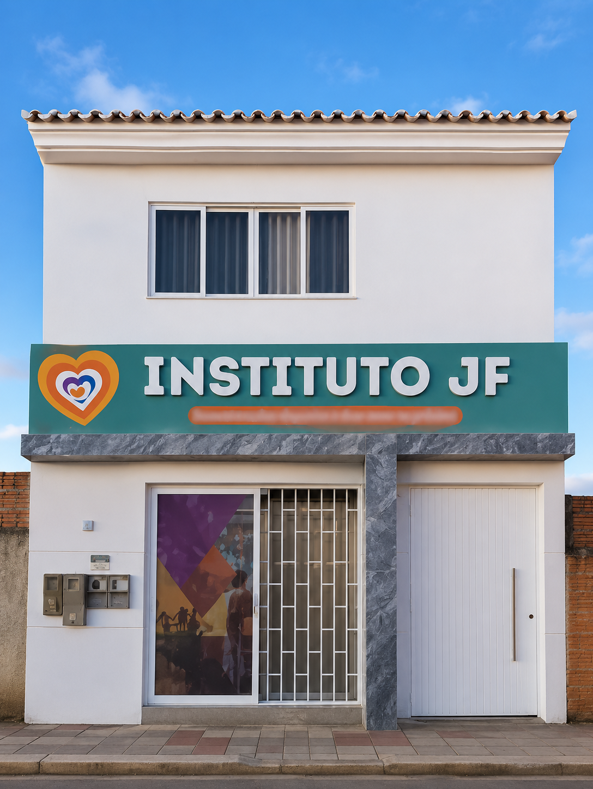

Trabalho que virou oportunidade
Da atuação no SINE à relação com a Casa do Trabalhador, uma história ligada ao emprego, à qualificação e à criação de oportunidades com dignidade.
Barreiras • Oeste da Bahia
Advogado, vereador de Barreiras em seu terceiro mandato e pré-candidato a deputado estadual.
Uma história de trabalho.
Um futuro para o Oeste.
Uma trajetória construída em Barreiras, com trabalho, experiência e presença. Agora, um novo passo para ampliar a representação da nossa região.
Acompanhe no InstagramQuem é João
Da liderança estudantil ao SINE Barreiras, João construiu uma trajetória ligada ao trabalho, à qualificação e à presença junto às pessoas.
Depois de três mandatos como vereador, da Casa do Trabalhador e do Instituto JF, leva a experiência construída em Barreiras para um novo projeto de representação do Oeste da Bahia.
Trajetória
Uma história pública construída com presença, escuta e responsabilidade. Em Barreiras, João Felipe transformou experiência em trabalho próximo das pessoas, conectando oportunidades, participação e compromisso social.
Agora, esse caminho ganha uma dimensão regional: representar o Oeste da Bahia com firmeza, maturidade e disposição para acompanhar demandas, articular soluções e defender o desenvolvimento de quem vive e trabalha na região.

O começo de uma trajetória ligada à representação, à juventude e à participação na vida coletiva.

Uma experiência próxima de quem busca trabalho, qualificação e novas oportunidades.

Experiência pública construída com presença, escuta e a confiança renovada da população de Barreiras.

Atuação conectada a oportunidade, dignidade, trabalho e compromisso social.
A pré-candidatura amplia o horizonte de uma trajetória que nasce em Barreiras e olha para a representação regional.
Quatro pilares
Experiência para agir, responsabilidade para construir e proximidade para representar.
Da atuação no SINE à relação com a Casa do Trabalhador, uma história ligada ao emprego, à qualificação e à criação de oportunidades com dignidade.
Fiscalização séria, baseada em evidências, com encaminhamento, acompanhamento e busca responsável por resultado.
Juventude e experiência reunidas em um percurso que vai da liderança estudantil a três mandatos e ao amadurecimento político.
Barreiras é a origem de um projeto que reconhece as cidades, comunidades e a força do trabalho em todo o Oeste da Bahia.
Galeria
Espaços preparados para registrar pessoas, trabalho e paisagens do Oeste.

Imagem em breveAcompanhe de perto
Veja a rotina, os encontros e os próximos passos dessa trajetória pelo Oeste da Bahia.
@vereadorjoaofelipe Acompanhe no Instagram